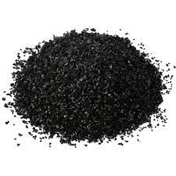

Karbon, doğada yaygın bulunan ametal kimyasal elementtir.
Evrende bolluk bakımından altıncı sırada yer alan karbon, kızgın yıldızlarda hidrojenin termonükleer yanmasında temel rol oynar.
Dünyada hem doğal halde, hem de başka elementlerle bileşik halinde bulunan karbon, ağırlık olarak Dünya'nın yerkabuğunun yaklaşık %0,2'sini oluşturur.
En arı (katışıksız) biçimleri elmas ve grafittir; daha düşük arılık derecelerinde maden kömürünün, kok kömürünün ve odun kömürünün bileşeni olarak bulunur.
Atmosferin yaklaşık % 0,05'ini oluşturan ve bütün doğal sularda erimiş olarak bulunan karbon dioksit, kireç taşı ve mermer gibi karbonat mineralleri, kömürün, petrolün ve doğalgazın başlıca yapıtaşları olan hidrokarbonlar, en bol bulunan bileşikleridir.
geri dön
